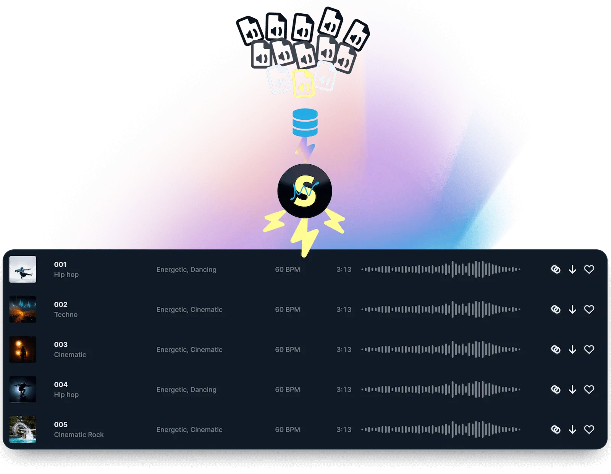

为什么 Soundraw 敢说自己是唯一版权安全的 AI 音乐工具
AI 音乐行业版权风波频发的 2024-2025，Soundraw 凭什么把"全球永久商用"四个字写在首页承诺里？答案藏在它训练环节就切断的那条灰色地带。
我一直在想一个问题：为什么 AI 音乐工具做了快十年，真正敢让用户放心商用的没几个？
2024 到 2025 年，这个行业像被踩了一脚油门的雷区——Suno 因训练数据侵权被多家唱片公司起诉，Udio 也被推上风口浪尖，甚至有平台直接下架了商业使用功能。用户下载了一首 AI 生成的歌当视频背景乐，可能过两个月就收到版权投诉邮件。这不是危言耸听，是已经发生的事。
但 Soundraw 不一样。它的官网从第一天起就把"全球永久商用"写在首页，而且真的有人敢用——Captions AI、Lumen5、Veed 这些视频工具直接把它嵌进编辑器里，用户生成的音乐版权跟着视频一起走，不用额外处理。这背后到底是什么原理？我翻了它的技术说明、集成案例和文档，试着拆解一下。
核心原理：训练数据的"血缘隔离"
Soundraw 的解法从模型训练的第一天就开始了。
市面上大多数 AI 音乐工具的做法是爬取互联网上的公开歌曲——Spotify、YouTube、SoundCloud 上的艺人作品，一股脑喂给模型学习。模型学会了音乐的"语言"，但它的词汇表是从别人的歌里抄来的。你生成一首 beat，旋律片段可能来自 Drake 的某句副歌，鼓型可能撞了 Billie Eilish 的某段间奏。模型本身不违法，但你用它生成的东西就进入了灰色地带——版权方可以说你侵权，因为你的音乐元素有迹可循。
Soundraw 选了另一条路：只吃自家生产的音乐素材。它在平台内部组织了一批签约制作人，持续创作原创 beats 和 loops，这些素材的版权全部归 Soundraw 所有，是训练数据的唯一来源。模型训练时见不到任何公开艺人的作品，自然也就"抄"不出来。
这听起来很简单，但执行起来代价不小——意味着 Soundraw 必须养一个稳定的制作人团队，持续产出原创素材，而同行们只需要爬取公开数据就能跑起来。但这个代价换来了一个决定性的优势：生成结果的版权可以被精确追溯和保证。你在 Soundraw 生成的每一个 beat，它的音乐元素都能追溯到 Soundraw 自家制作人的原创素材库，不会和任何已发行歌曲产生版权重叠。

这个设计在 2024 年之前可能只是一个差异化卖点，但在 2024 至 2025 年行业版权风波集中爆发的背景下，它从"卖点"变成了"底线"。多家同行因为训练数据来源不透明被起诉或被迫下架商业功能，Soundraw 反而在这个窗口期收获了一批 B2B 客户——视频工具、游戏开发商、播客平台，这些有合规压力的企业客户是它的核心付费群体。
为什么要做 Bar 级 Mixer？
版权问题解决了，还有一个普遍痛点：大多数 AI 音乐工具停留在"一键生成然后下载"的层面——给个风格、点个按钮、拿到一个 mp3 文件完事。你想调一下某段落的鼓点？想把第二段的贝斯换成更重的？不好意思，做不到。
Soundraw 反其道而行之，做了一个 Bar 级的 Mixer 编辑器。什么意思？它把一首 beat 拆成五轨（melody / backing / bass / drum / fills），每一轨可以独立静音、调音量、替换 Bar（小节）。如果你觉得第一段的鼓点太弱，换成另一套鼓型；如果 melody 和 backing 配起来不协调，各换一个 Bar 试试。

这个设计的原理是什么？我理解有两层考虑。
第一层，AI 生成的音乐很难一次就完美。即使风格选对了，某一段的情绪或能量也可能不对。如果不能编辑，用户只能反复点"重新生成"碰运气，生成效率很低。Bar 级编辑让用户可以在一个 beat 上精修，而不是每次从头来过。
第二层，把"生成"和"编辑"解耦。生成阶段 AI 负责出一个靠谱的起点，编辑阶段用户负责把它变成自己想要的样子。这个分工让双方都发挥擅长的事——AI 擅长快速铺底，人擅长判断品味。
代价也很明显：Mixer 的技术实现门槛比"一键生成"高很多，需要 AI 模型输出可拆解的 Bar 级别数据，而不是一个完整的音频文件。同行们大多不愿意在这个方向投入，因为短期收益不如堆风格数量来得直接。但 Soundraw 选择了这条难走的路，因为它瞄准的不止是"能出歌"，而是"能出能用的歌"——能让视频创作者直接用、能让独立音乐人拿分轨自己唱人声然后分发的那种。
风格融合：在可控与创新之间找平衡
2025 年 3 月 Soundraw 发布 V2 版本，核心更新是风格融合（Genre Blending）——允许同时选择两种风格，比如 Hip-Hop + Orchestra、Trap + Lo-Fi，AI 会自动融合生成独一无二的混合节拍。
这个功能看起来很酷，但背后的技术取舍值得聊一聊。
一般的 AI 音乐生成是单风格的——模型在某个风格的数据集上训练，生成时输出这个风格的音乐。但融合两种风格就不一样了：你需要模型理解两种风格的"规则"，然后找到它们的交集和平衡点。Hip-Hop 的节奏框架很稳定（通常 4/4 拍，鼓点在 1、3 拍重），Orchestra 的织体可能更复杂（多声部、渐强渐弱）。怎么让两者融在一起不打架？
Soundraw 的做法不是让模型自由发挥，而是用规则约束融合过程——在节拍层面保持第一种风格的框架，在音色和织体层面引入第二种风格的元素。这样生成的结果既不会变成"四不像"，又能产生有新鲜感的混合效果。比如 Hip-Hop + Orchestra，出来的节拍还是 Hip-Hop 的节奏，但用了管弦乐的音色和铺底。
这个设计的好处是可控性强——用户大概知道会得到什么。代价是创新空间被限制了——真正颠覆性的风格碰撞可能出不来，但对于工具型产品来说，可控比颠覆性更重要。用户是来拿能用的东西的，不是来碰运气开盲盒的。
集成设计：为什么 Captions 能把它嵌进编辑器
Captions AI 在自己的博客里完整公开了和 Soundraw 的集成案例——用户在 Captions 视频编辑器里点一下 "Add AI Music"，选风格、时长、情绪参数，几秒后音频自动出现在视频轨道上，不用跳转 Soundraw 页面。
这个集成的流畅度其实暴露了 Soundraw API 设计的底层逻辑。它的 API 是参数驱动的——你给它传 Style / Mood / Length 这些人类能理解的参数，它返回一个 JSON 对象，里面包含生成的音频 URL、各个 Bar 的元数据、甚至分轨 Stem 的下载地址。而不是让你传一段复杂的 prompt 或者一个音频文件。
这个设计让集成方的工作量降到最低——Captions 只需要把自己界面上的音乐参数映射到 Soundraw API 的 JSON 格式，剩下的交给 Soundraw。版权也是自动透传的——Captions 用户用 Soundraw 生成的音乐，版权安全性和直接用 Soundraw 一样，由 Soundraw 和 Captions 之间的企业合同兜底，用户不需要额外处理。
适合谁，不适合谁
聊了这么多原理，最后说句实在的：Soundraw 适合什么场景，不适合什么场景。
适合的：内容创作者（YouTube、B 站、抖音视频背景乐）、独立音乐人（拿分轨自己唱人声）、企业产品（需要嵌入即时背景音乐的视频工具、游戏、App）、播客制作者。这几类人的共同需求是版权安全优先 + 能快速出一个能用的东西，对"创作自由度"的要求没那么极端。
不适合的：追求极致原创性的音乐人（AI 生成的音乐有固定的风格边界，很难突破）、预算极其有限的个人用户（Creator 计划月费不算便宜）、需要极短反馈周期的场景（生成需要几秒，不是毫秒级响应）。
写在最后
AI 音乐行业走到今天，最大的坑不是"能不能生成歌"，而是"生成的歌能不能放心用"。Soundraw 的解法很朴素——从训练数据的源头就把版权风险掐死，然后在生成之后补上编辑和导出环节，把一个玩具变成工具。
这个思路对不对？时间会给答案。但至少在 2025 年这个节点上，当同行们还在跟版权方扯皮或者忙着下架功能的时候，Soundraw 已经在给 Captions、Lumen5 这些客户稳定供货了。